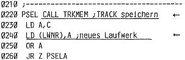
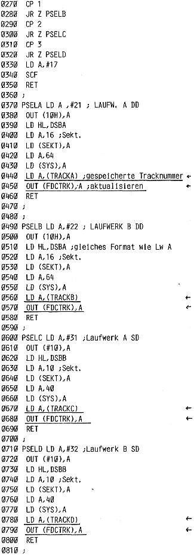

80-Bus Journal |
April/Mai/Juni 1984 · Ausgabe 2 |
Seit langem ist nun die „Seite für Floppy-Einsteiger“ schon ein fester Bestandteil des Journals. Es wäre an der Zeit, sie endlich hinauszuwerfen, aber leider ergeben sich immer wieder Umstände, die erneute „Nachlesen“ für Hard- und Software notwendig machen.
Zunächst ein Käfer, der die Funktion des STAT.COM zur Statusanzeige einer Diskette beeinträchtigt.
Im Hex- Listing (Heft 10/11-83 Seite 18) hat sich aus ungeklärten Gründen ein Byte beim Ausdruck verändert. Korrigieren Sie also bitte:
13D2 63 -→ 23
Damit läuft das Programm. (Danke, Herr Flockau).
Der Kopierbefehl „C“ des EMDOS funktionierte bisher auch nicht, d.h. das Directory der kopierten Diskette schien einwandfrei, die zuerst kopierten Programme ließen sich aber nicht laden.
Das Problem liegt daran, daß sich die alten Versionen von PHEAS nicht merken, welche Spur vor dem Umschalten auf ein anderes Laufwerk gerade bearbeitet wurde. Nach erneutem Umschalten geht dann alles drunter und drüber.
Beim BACKUP- Programm hatte ich diesem Umstand schon Rechnung getragen. Nun habe ich auch das PHEAS entsprechend erweitert, sodaß nun leider schon Version 2.5 vorliegt.
Im folgenden ist der Programmteil nochmals als Assembler abgedruckt; die Änderungen sind markiert. Dann folgt der Hex-Ausdruck des gesamten PHEAS2.5. Der Assembler des neuen PHEAS befindet sich auf der Diskette zu diesem Heft (Disk2). Im Rahmen einer „Software-Pflege“ würde ich Ihnen aber auch jederzeit Ihre Disk0 entsprechend ändern (unentgeldlich versteht sich).
 | Seite 20 von 52 |
|---|